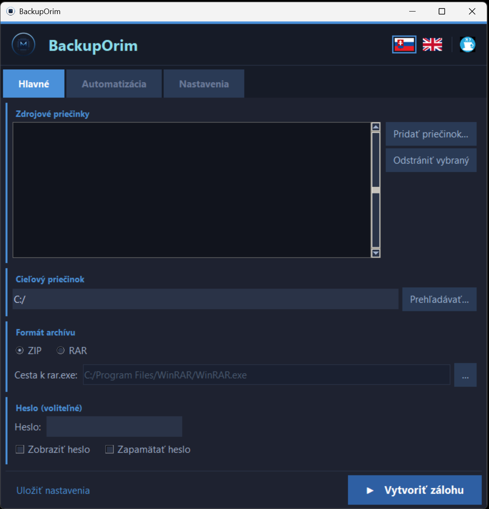

BackupOrim
Jednoduchý nástroj na zálohovanie priečinkov pre Windows
ZIP / RAR · šifrovanie AES-256 · plánovanie · systémová lišta
Stiahnutie
Python nie je potrebný — jediný prenosný .exe (~20 MB), beží na Windows 10 / 11 hneď po stiahnutí.
-
Otvorte odkaz vyššie a uložte
BackupOrim.exe(alebo kliknite priamo na veľké modré tlačidlo). - Spustite dvojklikom — žiadna inštalácia, žiadny Python, nič iné.
- Pri prvom spustení môže Windows SmartScreen zobraziť varovanie → kliknite „Ďalšie informácie" → „Spustiť".
Screenshot

Funkcie
Viacero priečinkov
Ľubovoľný počet zdrojov; každý sa archivuje samostatne.
ZIP a RAR
ZIP s AES-256 šifrovaním (
pyzipper); RAR cez rar.exe (WinRAR).
Voliteľné heslo
Šifruje obsah aj názvy súborov. Nikdy sa neukladá do logov.
Politiky čistenia
Posledných N záloh alebo staršie ako N dní — pre každý priečinok zvlášť.
Vylúčené vzory
Glob vzory:
node_modules, __pycache__, .git, *.tmp.
Kontrola integrity
Každý archív sa overí ihneď po vytvorení. Poškodené sa zmažú a nahlásia.
Automatické spustenie
Pri prihlásení · podľa plánu (denne / pracovné dni / vlastné dni).
Vypnutie PC po zálohe
Voliteľný checkbox — PC sa vypne 60 s po úspešnej zálohe. Zrušiť:
shutdown /a.
Systémová lišta
Minimalizácia do lišty; kontextové menu na rýchle spustenie zálohy.
Toast notifikácie
Konfigurovateľné Windows oznámenia o úspechu alebo chybe.
Single-instance
Druhé spustenie len zobrazí existujúce okno do popredia.
Rotujúci log
%APPDATA%\OrimslavBackup\backup.log (max 5 MB × 3 súbory).
Dvojjazyčné UI
Prepínanie SK / EN za behu, bez reštartu.
Požiadavky
Windows 10 / 11
x86-64
Nie je potrebný (.exe)
Iba pre RAR formát
Príkazové prepínače
| Prepínač | Popis |
|---|---|
| (žiadny) | Spustí grafické rozhranie |
| --autorun | Načíta uložené nastavenia, spustí zálohu raz a skončí — bez GUI |
| --autorun --shutdown-after | Rovnaké ako --autorun, ale po úspešnej zálohe vypne PC (60 s odklad) |
| --minimized | Spustí GUI skryté v systémovej lište |
| --minimized --autorun | Spustí GUI skryté v lište a po 3 s spustí zálohu (logon autostart) |
Umiestnenie dát
Všetky nastavenia a logy sú uložené v %APPDATA%\OrimslavBackup\:
| Súbor | Obsah |
|---|---|
| config.json | Nastavenia používateľa |
| backup.log | Rotujúci log zálohovania |
| last_run.json | Výsledok posledného zálohovania |
Pomenovanie archívov:
<názov_priečinka>_<RRRR-MM-DD_HH-MM-SS>.zip
príklad: webapp_2026-05-07_17-00-12.zipZostavenie zo zdrojového kódu
git clone https://github.com/Orimslav/Backup_tool.git
cd Backup_tool
python -m venv .venv
.\.venv\Scripts\Activate.ps1
pip install -r requirements.txt
python backup_app.py
.exe sa zostavuje automaticky cez GitHub Actions pri každom tagu v*:
git tag v1.0.0
git push origin v1.0.0